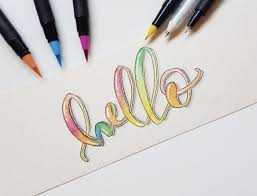

El arte es, sobre todo, un estado del alma.


Como su nombre lo dice, el hand lettering consiste en dibujar letras a mano. Es diferente a la caligrafía, donde se usa trazos básicos para formar letras y palabras. Con el hand lettering, cada letra se piensa cuidadosamente. Al emplear esta técnica, cada letra y palabra se crea para funcionar solo en esas situaciones.
“¿Qué materiales de lettering necesito para empezar a dibujar letras a mano?”
Muy buena pregunta. Si apenas estás introduciéndote en el arte de dibujar letras bonitas, no hace falta que gastes mucho en material para lettering de inmediato. Si bien el lettering lleva mucha práctica y tiempo para dominarlo, también la elección de las herramientas adecuadas puede facilitarte el dibujo de letras a mano. Puedes encontrar una amplia selección de herramientas y materiales, dependiendo del estilo que quieras dominar, por ejemplo, caracteres japoneses.
Algunos diseñadores solo trabajan con lápices, mientras que otros hacen uso de los muchos tipos de bolígrafos o rotuladores disponibles para armar su kit de lettering. Independientemente del medio que elijas, a través de la práctica y la investigación, descubrirás los materiales de lettering que debes utilizar para elevar tu oficio.


El punto es averiguar qué rotulador se adapta a tu arte. Por lo tanto, para empezar con tu kit de lettering, puedes invertir en un buen juego de rotuladores de punta fina. Las puntas de este tipo son perfectas para los pequeños detalles, y los tamaños gruesos y compactos, excelentes para rellenar letras. Quizá el tipo de rotulador más popular para hacer letras a mano es el rotulador de pincel o “brush pen” o “rotuladores de punta pincel”, un rotulador de fibra sintética cuya punta imita a la de un pincel.

Los rotuladores más conocidos y populares para hacer brush lettering son los de punta pincel de Tombow Dual Brush.
Precisión: Los rotuladores requieren precisión y una aplicación suave. Esta característica es imprescindible si vas a colorear o a escribir entre líneas tus letras, ya que necesitas un rotulador de lettering que no se mueva.
Puntas: Las puntas finas del rotulador suelen proporcionar un trazo preciso. Si el rotulador puede cambiar entre líneas finas y gruesas, entonces es mejor. Pero si tienes que elegir entre las dos, elige siempre las puntas finas.
Color: Los colores tienen que ser vibrantes, incluso si eliges los oscuros. Los rotuladores negros no deben parecer aguados cuando se usan sobre el papel.
Suavidad: El rotulador debe proporcionar una aplicación suave. Al usarlo, no debe dejar manchas o grumos en la superficie del papel.
Pueden probar con cualquier herramienta con la que se sientan cómodos o quieran experimentar. Si existe un estilo de lettering en particular que les llame la atención, fíjense si está hecho con una herramienta en particular. Hay ciertos acabados que solamente se logran con ciertos materiales de lettering. Y, también, presten mucha atención al sustrato. En este caso el papel para practicar la forma tradicional. El brush pen funciona muy bien sobre esta superficie. Pero si consigues un plumón multiuso como un Sharpie o intentas utilizar pinceles y pinturas acrílicas, podrías hacer lettering en cualquier superficie. Es cuestión de practicar y planificar.
Si lees, investigas y pruebas los materiales para lettering, podrás tomar una decisión informada sobre lo que debes adquirir para tu kit de lettering. Con la anterior lista de materiales, plantillas y cursos que te hemos proporcionado, estamos seguros de que encontrarás las herramientas adecuadas para que tus letras a mano destaquen sobre el resto.